Chapter 8: Performance, Emerging Tech, Careers & Learning¶
The final chapter turns knowledge into practice and looks ahead. It shows how to benchmark and monitor storage and memory honestly, how to troubleshoot slowdowns on Linux, Windows and macOS, and which technologies may shape the next decade: emerging memories, processing-in-memory, computational storage and CXL memory tiering, along with sustainability and the AI-driven memory market. It closes with careers, certifications, learning resources, home labs, interview questions and a 16-week study plan.
8.1 Benchmarking Storage: fio, CrystalDiskMark and Doing It Right¶
A storage benchmark runs a controlled pattern of reads and writes and measures how fast and how consistently a device or system responds. Good benchmarking means choosing a pattern that resembles the real workload, removing tricks like caches, and reporting latency as well as speed.

Think of it like…
Benchmarking a drive is like testing a car: a downhill sprint with a tailwind gives a thrilling number, but you learn more from a full loaded trip in traffic, measured many times.
Real-world example
Sam, a junior admin at the fictional Oakridge Dental, is told a new SSD 'does 7,000 MB/s'. His fio test of 4 KiB random writes at queue depth 1, after filling the drive twice, shows 60 MB/s with a 99.9th-percentile latency of 2 ms. That, not the box number, predicts how the practice-management database will feel.
How it works¶
- Write down the question: which workload, which device, which metric (IOPS, MB/s, latency percentiles)?
- Prepare the device: secure-erase or precondition SSDs by writing their full capacity (often twice) to reach steady state.
- Choose block size, read/write mix, random vs sequential, queue depth and number of jobs to match the real application.
- Bypass the OS page cache (direct I/O) unless you deliberately want to test caching, and use incompressible data.
- Run long enough (minutes, not seconds), repeat at least three times and record the median and spread.
- Report full settings, firmware, OS and kernel versions so others can reproduce the result.
Who uses it
Storage and performance engineers, system administrators, hardware reviewers, SSD vendors' validation teams and solution architects benchmark storage.
Key takeaway
Always quote latency percentiles (p99, p99.9) with IOPS: an SSD averaging 0.1 ms but spiking to 50 ms at p99.9 will hurt a database far more than its average suggests.
Going deeper
- The SNIA Solid State Storage Performance Test Specification (PTS) defines preconditioning and steady-state rules, because fresh-out-of-box SSDs are much faster until their free blocks run out and garbage collection starts.
- Consumer SSDs write into a fast SLC cache that may be only tens of gigabytes; sustained writes beyond it can drop from several GB/s to a few hundred MB/s, so short tests overstate speed.
- IOPS = queue depth ÷ latency (Little's law): 32 outstanding I/Os at 0.2 ms each gives about 160,000 IOPS; one outstanding I/O at the same latency gives only 5,000.
- fio's ioengine choice matters: psync tests one blocking I/O at a time, libaio and io_uring test asynchronous queues, and on Windows windowsaio is used; results differ by engine.
- Compressing or deduplicating systems need realistic data: fio's refill_buffers and buffer_compress_percentage options stop arrays from 'cheating' with zero-filled buffers.
- CrystalDiskMark's default profile runs SEQ1M Q8T1, SEQ1M Q1T1, RND4K Q32T1 and RND4K Q1T1; the RND4K Q1T1 line best predicts everyday desktop responsiveness.
Common mistakes & misconceptions
- Using dd if=/dev/zero for throughput: it is single-threaded, often cached and compressible, so it measures the page cache, not the disk.
- Testing a 1 GB file on a server with 256 GB of RAM without direct I/O: every read comes from memory.
- Running fio against a raw device that holds data: write tests overwrite it; use a scratch file or an empty test disk.
Try it: Three classic fio tests (Linux; run against a test file, never a disk holding data)¶
# 4 KiB random read, QD32, 4 jobs, 60 s, bypass page cache
fio --name=randread --filename=/tmp/fio.test --size=4G --direct=1 \
--ioengine=libaio --rw=randread --bs=4k --iodepth=32 --numjobs=4 \
--runtime=60 --time_based --group_reporting
# 1 MiB sequential write (throughput)
fio --name=seqwrite --filename=/tmp/fio.test --size=4G --direct=1 --rw=write --bs=1M --iodepth=8
# 4 KiB random write at QD1 (latency, like a database log)
fio --name=qd1 --filename=/tmp/fio.test --size=4G --direct=1 --rw=randwrite --bs=4k --iodepth=1 \
--runtime=30 --time_based --percentile_list=50:99:99.9
Key memory types, devices, interfaces, standards & tools¶
| Name | What it does | Example |
|---|---|---|
| fio workload recipes fio (Jens Axboe) · Tool · Current · Intermediate |
Standard fio parameter sets that mimic real applications: OLTP database, log writer, backup stream, VM boot storm. | An OLTP recipe uses --rw=randrw --rwmixread=70 --bs=8k --iodepth=16 --numjobs=8 for a database-like test. |
| fio job file fio · Format · Current · Intermediate |
An INI-style text file describing one or more fio workloads so tests are repeatable and shareable. | A team stores db-oltp.fio in Git so every new array is tested with identical parameters. |
| CrystalDiskMark Crystal Dew World (hiyohiyo) · Tool · Current · Beginner |
Popular free Windows tool showing sequential and random read/write speeds at several queue depths. | A gamer compares RND4K Q1T1 scores to see why one NVMe drive feels snappier than another. |
| DiskSpd Microsoft (open source) · Tool · Current · Intermediate |
Microsoft's command-line storage load generator for Windows, used to validate SQL Server and Hyper-V storage. | diskspd -c4G -b8K -d60 -o32 -t4 -r -w30 -Sh -L test.dat measures an 8 KiB 30% write mix. |
| ATTO Disk Benchmark ATTO Technology · Tool · Current · Beginner |
Windows tool measuring throughput across a range of transfer sizes, showing where a drive reaches full speed. | A video editor sees throughput plateau from 256 KiB transfers upward on an external RAID. |
| KDiskMark Open source · Tool · Current · Beginner |
A CrystalDiskMark-style graphical front end for fio on Linux. | A Linux student runs KDiskMark to compare a SATA SSD and an NVMe SSD with familiar test names. |
| Blackmagic Disk Speed Test Blackmagic Design · Tool · Current · Beginner |
Free macOS and Windows tool estimating whether a drive can sustain given video formats and frame rates. | A filmmaker checks that an external SSD can record 6K ProRes before a shoot. |
| dd and hdparm -t GNU coreutils; hdparm · Command · Legacy · Beginner |
Quick Unix commands often misused as benchmarks; they show rough sequential speed only. | hdparm -t /dev/sda reports 520 MB/s buffered reads — a sanity check, not a workload test. |
| vdbench Oracle (free download) · Tool · Current · Advanced |
Java-based enterprise storage workload generator able to replay complex mixes and verify written data. | An array vendor uses vdbench's data validation to catch silent corruption during failover testing. |
| elbencho Open source (Sven Breuner) · Tool · Current · Advanced |
Distributed benchmark for file, block, object (S3) and GPU-direct storage across many clients. | An AI team runs elbencho on 32 GPU nodes to measure aggregate S3 read throughput. |
| IOR and mdtest HPC community (open source) · Tool · Current · Advanced |
MPI-based benchmarks for parallel file system bandwidth (IOR) and metadata operations (mdtest). | mdtest shows a scratch file system creates 400,000 files per second across 64 clients. |
| Latency percentiles (p50, p99, p99.9) Industry practice · Metric · Current · Intermediate |
The latency under which 50%, 99% or 99.9% of I/Os complete; tail percentiles reveal stalls averages hide. | Average 120 µs looks fine, but p99.9 of 15 ms explains occasional checkout-page timeouts. |
| Thermal effects on benchmark results SSD and controller behaviour · Concept · Current · Intermediate |
Drives cut speed when their controller overheats, so long benchmarks without airflow can understate or vary results. | An M.2 SSD without a heatsink drops from 6 GB/s to 1.5 GB/s after 90 seconds of writing. |
| SNIA Solid State Storage PTS SNIA · Standard · Current · Advanced |
SNIA's Performance Test Specification defining repeatable SSD test procedures, preconditioning and reporting. | An enterprise buyer requires vendors to submit PTS-style steady-state results, not marketing peaks. |
8.2 Memory Benchmarks and Industry Benchmark Suites¶
Memory benchmarks measure how many gigabytes per second a system can move between memory and CPU, and how long a single access takes. Industry suites such as MLPerf Storage and SPECstorage Solution define standard workloads and publication rules so that vendors' results can be compared fairly.
Think of it like…
Memory bandwidth is how many lanes a motorway has; memory latency is how long one car takes to drive the route; an industry benchmark is an official race with published rules and referees.
Real-world example
Ines tunes a weather code at the fictional Fjord Research Centre. STREAM Triad shows her new two-socket server reaching about 700 GB/s, but only when all memory channels are populated and threads are pinned to the right NUMA node. Intel MLC shows remote-socket latency of about 200 ns versus about 110 ns locally, so she binds each MPI rank to its local memory.
How it works¶
- Measure peak bandwidth with STREAM (Copy, Scale, Add, Triad) using arrays much larger than the CPU caches.
- Measure idle and loaded latency with Intel MLC or lmbench's pointer-chasing tests.
- Repeat with different thread counts and NUMA placements to see scaling and cross-socket penalties.
- For storage systems, run standard suites (MLPerf Storage, SPECstorage Solution 2020) under their published rules.
- Compare against theoretical peak: channels × transfer rate × 8 bytes per 64-bit channel.
Who uses it
Performance engineers, HPC centres, CPU and server vendors, hardware reviewers and storage vendors' benchmarking teams use these tools.
Key takeaway
Theoretical DDR bandwidth = channels × MT/s × 8 bytes; one DDR5-6400 channel is 51.2 GB/s, and STREAM usually reaches about 70-90% of the total.
Going deeper
- STREAM, written by John McCalpin in the early 1990s, reports four kernels; Triad (a = b + q×c) is the headline figure and each array should be at least four times the total last-level cache.
- Intel Memory Latency Checker (MLC) measures idle latency, peak bandwidth by read/write ratio, and loaded-latency curves showing how latency climbs as bandwidth demand approaches saturation.
- MLPerf Storage, from MLCommons, uses the DLIO tool to emulate accelerators reading training data (3D U-Net, ResNet-50, CosmoFlow) and, from v2.0 in 2025, checkpoint workloads.
- SPECstorage Solution 2020 measures file-storage systems with workloads such as AI_IMAGE, EDA_BLENDED, GENOMICS, SWBUILD and VDA, reporting business metrics alongside latency.
- The Storage Performance Council's SPC-1 and SPC-2 were once the main block-array benchmarks, but few results have been published in recent years; the IO500 list now drives HPC storage comparisons.
- Published results are only comparable within the same benchmark version and rules; always read the full disclosure (hardware, cost, settings) rather than just the headline number.
Common mistakes & misconceptions
- Running STREAM with arrays that fit in cache: results show cache bandwidth and can be several times higher than real memory bandwidth.
- Populating only some memory channels: a server with 4 of 8 channels filled loses half its bandwidth even with the same total GB.
- Comparing vendors' MLPerf Storage numbers without checking how many simulated accelerators and clients each used.
Try it: Build and run STREAM on Linux (GCC with OpenMP)¶
curl -O https://www.cs.virginia.edu/stream/FTP/Code/stream.c
gcc -O3 -fopenmp -DSTREAM_ARRAY_SIZE=100000000 stream.c -o stream
OMP_NUM_THREADS=$(nproc) OMP_PROC_BIND=spread ./stream | grep -E 'Copy|Scale|Add|Triad'
numactl --hardware # see NUMA nodes and their memory
Key memory types, devices, interfaces, standards & tools¶
| Name | What it does | Example |
|---|---|---|
| STREAM John McCalpin (University of Virginia) · Tool · Current · Intermediate |
Classic sustained-memory-bandwidth benchmark with Copy, Scale, Add and Triad kernels. | A cluster buyer requires 85% of theoretical bandwidth on STREAM Triad in the acceptance test. |
| Intel Memory Latency Checker (MLC) Intel · Tool · Current · Intermediate |
Free tool measuring memory latency and bandwidth, including NUMA and loaded-latency behaviour. | mlc --latency_matrix shows 110 ns local and 190 ns cross-socket latency on a two-socket server. |
| AIDA64 Cache & Memory Benchmark FinalWire · Tool · Current · Beginner |
Windows benchmark reporting cache and memory read, write, copy bandwidth and latency. | An overclocker checks whether tighter DDR5 timings cut latency from 72 to 64 ns. |
| lmbench Larry McVoy and Carl Staelin · Tool · Legacy · Advanced |
Micro-benchmark suite whose lat_mem_rd test reveals the latency of each cache level and DRAM. | Plotting lat_mem_rd shows clear steps at 48 KiB, 2 MiB and 32 MiB — the L1, L2 and L3 sizes. |
| likwid-bench LIKWID project (FAU Erlangen) · Tool · Current · Advanced |
Micro-benchmark and performance-counter toolkit for measuring bandwidth per core, socket and cache level. | An HPC engineer finds eight cores already saturate one socket's memory bandwidth. |
| sysbench memory Alexey Kopytov (open source) · Tool · Current · Beginner |
Simple cross-platform test of memory throughput, popular in cloud VM comparisons. | sysbench memory --memory-block-size=1M run compares two cloud instance types in a minute. |
| Theoretical vs sustained bandwidth Industry practice · Metric · Current · Intermediate |
Peak is channels × rate × width; sustained is what real code reaches, usually 70-90% of peak. | Twelve channels of DDR5-6400 give 614 GB/s on paper and about 500 GB/s in STREAM. |
| Loaded latency Industry practice · Metric · Current · Advanced |
Memory latency measured while other cores consume bandwidth; it rises steeply near saturation. | Idle latency is 100 ns but jumps to 300 ns when the socket runs at 90% of peak bandwidth. |
| MLPerf Storage MLCommons · Resource · Current · Intermediate |
Benchmark suite measuring how many simulated AI accelerators a storage system can keep busy, plus checkpoint speed. | A vendor shows its system keeps 256 simulated GPUs above 90% utilisation on 3D U-Net. |
| DLIO Argonne National Laboratory (open source) · Tool · Current · Advanced |
Deep-learning I/O benchmark that emulates training data loading and checkpointing without real GPUs. | Engineers run DLIO on CPU nodes to size storage before the GPUs arrive. |
| SPECstorage Solution 2020 SPEC (Standard Performance Evaluation Corporation) · Resource · Current · Advanced |
Industry benchmark for file-storage solutions with AI, EDA, genomics, software-build and video workloads. | A NAS vendor publishes SPECstorage EDA_BLENDED results showing job sets at under 1 ms latency. |
| SPC-1 / SPC-2 Storage Performance Council · Resource · Legacy · Advanced |
Block-storage benchmarks for transaction-style (SPC-1) and large sequential (SPC-2) workloads with price-performance. | Students read old SPC-1 full disclosures to learn how arrays were configured and priced. |
| YCSB Yahoo! Research (open source) · Tool · Current · Intermediate |
Yahoo! Cloud Serving Benchmark: standard key-value workloads used to compare databases and their storage. | Workload A (50/50 read-update) shows the database's p99 latency doubling on network-attached disks. |
8.3 Monitoring Storage and Memory on Linux¶
Linux ships with tools that show, layer by layer, how memory is used and how busy each disk is. Knowing a handful of commands lets you answer the key questions quickly: is the system short of memory, which disk is slow, and which process is causing it.
Think of it like…
Monitoring is like a car dashboard plus a mechanic's diagnostic plug: iostat and vmstat are the speedometer and fuel gauge; tracing tools are the plug that tells you exactly which part is struggling.
Real-world example
Raj, an SRE at the fictional Coastline Bank, gets an alert that the payments API slowed down. vmstat shows high 'wa' (I/O wait); iostat -x shows /dev/nvme2n1 with r_await jumping from 0.2 to 9 ms; iotop points to a backup job reading at full speed. Throttling the backup with ionice restores normal latency in minutes.
How it works¶
- Start broad: uptime, vmstat 1 and free -h show load, memory, swapping and I/O wait.
- Find the busy device: iostat -xz 1 shows per-device IOPS, MB/s, average wait and queue size.
- Find the process: iotop or pidstat -d 1 show who is reading and writing.
- Check pressure: /proc/pressure/io and /proc/pressure/memory show how long tasks were stalled.
- Dig deeper with tracing (biolatency, blktrace, perf) and check device health (nvme-cli, smartctl, dmesg).
Who uses it
Linux administrators, SREs, DevOps engineers, database administrators and support engineers use these tools during every performance incident.
Key takeaway
In iostat -x, look first at r_await/w_await (latency) and aqu-sz (queue); %util near 100% is meaningless for NVMe SSDs that serve many requests in parallel.
Going deeper
- iostat's columns come from /proc/diskstats: r/s and w/s are IOPS, rkB/s and wkB/s are throughput, r_await and w_await are average milliseconds including queueing, and aqu-sz is average queue length.
- Pressure Stall Information (PSI, Linux 4.20+) reports the share of time some or all tasks were stalled on CPU, memory or I/O over 10, 60 and 300 seconds, and can trigger alerts before users notice.
- biolatency and biosnoop from the BCC/bpftrace collections use eBPF to print a latency histogram per disk or every I/O with its process, with very low overhead in production.
- free's 'available' column, not 'free', shows how much memory can be used without swapping, because Linux deliberately fills spare RAM with page cache that it can drop instantly.
- numastat and numactl --hardware show per-NUMA-node memory use; heavy 'other_node' counts mean threads are reading remote memory and losing bandwidth.
- Prometheus node_exporter exposes the same kernel counters (node_disk_*, node_memory_*, node_pressure_*) for dashboards in Grafana, turning one-off checks into continuous monitoring.
Common mistakes & misconceptions
- Panicking when 'free' memory is near zero: Linux uses spare RAM as cache; check 'available' and swap activity instead.
- Trusting %util for SSDs: it only shows the device had at least one I/O in flight; an NVMe drive at 100% util may have plenty of headroom.
- Reading only averages: a 1-second iostat average can hide 50 ms spikes; use latency histograms for tail behaviour.
Try it: A first-five-minutes storage check on Linux¶
uptime; free -h
vmstat 1 5 # si/so = swapping, wa = I/O wait
iostat -xz 1 5 # per-device latency and queue
sudo iotop -oPa # processes doing I/O
cat /proc/pressure/io /proc/pressure/memory
sudo nvme smart-log /dev/nvme0 # NVMe health
sudo smartctl -H -A /dev/sda # SATA/SAS health
sudo dmesg -T | grep -iE 'error|timeout|reset' | tail
Key memory types, devices, interfaces, standards & tools¶
| Name | What it does | Example |
|---|---|---|
| iostat sysstat package · Command · Current · Beginner |
Reports per-device IOPS, throughput, latency (await) and queue size at a chosen interval. | iostat -xz 1 shows nvme0n1 at 45,000 r/s with r_await 0.15 ms during a database scan. |
| vmstat procps · Command · Current · Beginner |
One-line-per-interval summary of processes, memory, swap, block I/O, interrupts and CPU, including I/O wait. | Non-zero si/so columns in vmstat 1 reveal that a server is actively swapping. |
| sar sysstat package · Command · Current · Intermediate |
Collects and replays historical system statistics, so you can see what disks and memory did last night. | sar -d -f /var/log/sa/sa07 shows disk latency peaked at 02:10 during the backup window. |
| iotop and pidstat -d iotop; sysstat · Command · Current · Beginner |
Show which processes are reading and writing, and how much, in real time. | pidstat -d 1 reveals a log shipper writing 200 MB/s and starving the database. |
| free and /proc/meminfo procps; Linux kernel · Command · Current · Beginner |
Show total, used, cached and available memory plus swap; meminfo gives dozens of detailed counters. | free -h reports 2 GiB 'free' but 48 GiB 'available', so the server is not short of memory. |
| Pressure Stall Information (PSI) Linux kernel (4.20+) · Concept · Current · Intermediate |
Kernel metrics showing the percentage of time tasks were stalled waiting for CPU, memory or I/O. | /proc/pressure/io shows 'some avg10=35.00', meaning tasks waited on I/O 35% of the last 10 seconds. |
| blktrace and blkparse Jens Axboe (open source) · Tool · Current · Advanced |
Trace every request through the Linux block layer, from queueing to completion, for deep analysis. | blktrace shows requests waiting 5 ms in the scheduler before even reaching the device. |
| biolatency and biosnoop (BCC/bpftrace) IO Visor BCC, bpftrace projects · Tool · Current · Advanced |
eBPF tools printing disk I/O latency histograms or each I/O with process, size and latency. | biolatency -D 10 shows most reads at 128-256 µs but a tail at 16-32 ms on one disk. |
| perf Linux kernel · Tool · Current · Advanced |
Linux profiler and tracer using CPU counters and tracepoints, including cache-miss and memory-access analysis. | perf stat -e cache-misses,cycles ./app shows the app spends most cycles waiting on memory. |
| nvme-cli commands linux-nvme project · Command · Current · Intermediate |
Command-line tool to list NVMe drives and read their health, error and identity logs. | nvme smart-log /dev/nvme0 shows percentage_used 7% and zero media errors. |
| I/O wait (%wa / %iowait) Linux kernel CPU accounting · Metric · Current · Intermediate |
Share of time a CPU sat idle while I/O it issued was outstanding; a hint of storage waits, not a direct measure. | High %wa on a busy server can drop to zero when CPU load rises, even though disks are just as slow. |
| numastat and numactl numactl package · Command · Current · Advanced |
Show per-NUMA-node memory statistics and run programs bound to specific CPUs and memory nodes. | numactl --cpunodebind=0 --membind=0 ./db keeps a database on socket 0's local memory. |
| dmesg and journalctl -k util-linux; systemd · Command · Current · Beginner |
Show kernel messages, including disk errors, timeouts, controller resets and out-of-memory kills. | dmesg -T shows 'nvme0: I/O timeout, reset controller' just before the application froze. |
| Prometheus node_exporter Prometheus project (CNCF) · Software · Current · Intermediate |
Agent exposing Linux disk, memory and pressure counters for time-series monitoring and alerting. | A Grafana alert fires when node_disk read latency stays above 10 ms for five minutes. |
8.4 Troubleshooting Playbook and Windows/macOS Tools¶
Troubleshooting is a method, not a tool: describe the symptom precisely, check each resource for utilisation, saturation and errors, narrow down the layer at fault, fix it and confirm. Windows and macOS have their own built-in tools for the same checks.
Think of it like…
A good troubleshooter works like a doctor: ask what hurts and since when, check vital signs in a fixed order, order targeted tests, treat the cause rather than the symptom, then schedule a follow-up.
Real-world example
Amira supports the fictional Westfield Accountants. Staff say 'the file server is slow'. Performance Monitor shows Avg. Disk sec/Read at 45 ms on the data volume; Get-PhysicalDisk reports one disk 'Warning'; the System log lists repeated Event ID 153 retries. Replacing the failing disk brings latency back to 3 ms.
How it works¶
- Define the symptom: what is slow, since when, for whom, and how is it measured?
- Apply the USE method to each resource (CPU, memory, disk, network): utilisation, saturation, errors.
- Check recent changes: updates, new workloads, backups, firmware, capacity near full.
- Isolate the layer: application, OS cache, file system, driver, path, device or remote array.
- Fix the cause, then measure again with the same metric to prove the improvement.
- Write a short post-incident note so the next person solves it faster.
Who uses it
Help-desk and support engineers, system administrators, SREs and storage specialists all follow this playbook.
Key takeaway
On Windows, Avg. Disk sec/Read and sec/Write in Performance Monitor are the latency counters; sustained values above about 20 ms for SSD-backed volumes usually mean trouble.
Going deeper
- Brendan Gregg's USE method checks every resource for utilisation (busy time), saturation (queued work) and errors, giving a complete checklist that avoids guessing.
- Windows Event ID 129 (storport reset to device) and 153 (I/O retried) often point to failing disks, bad cables, HBA firmware or overloaded SAN paths rather than to the application.
- A volume above roughly 80-90% full often slows down: copy-on-write file systems fragment, SSDs have fewer free blocks for garbage collection, and some arrays throttle near full.
- On macOS, Activity Monitor's Disk and Memory tabs show per-process I/O and memory pressure, fs_usage traces file-system calls live, and diskutil plus Disk Utility's First Aid check volumes.
- In shared environments a 'noisy neighbour' — another VM, container or tenant hammering the same disk or array — is a common cause; QoS limits or moving the workload fix it.
Common mistakes & misconceptions
- Rebooting first: it may clear the symptom and destroy the evidence; capture counters and logs before restarting.
- Upgrading hardware before measuring: many 'slow storage' complaints are actually memory shortage causing swapping or network latency.
- Running chkdsk /f or fsck on a failing disk before copying data off: repair attempts can stress a dying drive; image or back it up first.
Try it: Quick storage health and latency checks in Windows PowerShell¶
Get-PhysicalDisk | Select FriendlyName,MediaType,HealthStatus,OperationalStatus
Get-PhysicalDisk | Get-StorageReliabilityCounter |
Select DeviceId,Temperature,Wear,ReadErrorsTotal,WriteErrorsTotal
Get-Counter '\PhysicalDisk(*)\Avg. Disk sec/Read','\PhysicalDisk(*)\Current Disk Queue Length' -SampleInterval 2 -MaxSamples 5
Get-WinEvent -FilterHashtable @{LogName='System'; Id=129,153} -MaxEvents 20
Key memory types, devices, interfaces, standards & tools¶
| Name | What it does | Example |
|---|---|---|
| USE method Brendan Gregg · Concept · Current · Intermediate |
Checklist method examining Utilisation, Saturation and Errors for every resource to find bottlenecks systematically. | Disk utilisation 40%, saturation (queue) high, errors zero — the array is fine but the host queue depth is too low. |
| Performance Monitor (PerfMon) Microsoft Windows · Tool · Current · Beginner |
Built-in Windows tool for graphing and logging counters such as disk latency, queue length and memory. | A data-collector set logs Avg. Disk sec/Write every 15 seconds for a week to catch nightly slowdowns. |
| Resource Monitor Microsoft Windows · Tool · Current · Beginner |
Windows tool showing per-process disk activity, file names, response times and memory use live. | Resource Monitor reveals the antivirus scanning a 300 GB folder, causing 80 ms disk response times. |
| Task Manager Performance tab Microsoft Windows · Tool · Current · Beginner |
Quick view of each disk's active time, transfer rate and response time, plus memory in use and committed. | A user spots disk 0 at 100% active time with 2-second response times on an old laptop HDD. |
| Get-PhysicalDisk and Get-StorageReliabilityCounter Microsoft Windows Storage module · Command · Current · Intermediate |
PowerShell cmdlets reporting disk health status and reliability counters such as wear, temperature and errors. | Wear reports 92% on a cache SSD, so it is replaced before it fails. |
| Windows storage event IDs 129 and 153 Microsoft storport · Concept · Current · Advanced |
System-log events showing device resets (129) and retried I/O (153), early warnings of hardware or path faults. | Dozens of Event 153s on one HBA port lead the admin to a damaged fibre cable. |
| winsat disk Microsoft Windows · Command · Legacy · Beginner |
Built-in Windows System Assessment Tool command that runs a quick disk read/write test. | winsat disk -drive c gives a fast sanity check of sequential and random speeds. |
| CrystalDiskInfo Crystal Dew World (hiyohiyo) · Tool · Current · Beginner |
Free Windows utility showing SMART and NVMe health, temperature and total host writes. | CrystalDiskInfo warns 'Caution' because a laptop SSD's available spare dropped to 10%. |
| macOS Activity Monitor and fs_usage Apple · Tool · Current · Beginner |
Activity Monitor shows memory pressure and disk use per app; fs_usage traces file-system calls live. | sudo fs_usage -f filesys Photos shows the Photos app reading thousands of thumbnails. |
| Disk Utility and diskutil Apple · Tool · Current · Beginner |
macOS tools to inspect, repair (First Aid), partition and erase disks and APFS containers. | diskutil apfs list shows an APFS container and its snapshots eating unexpected space. |
| chkdsk and fsck Microsoft; Linux e2fsprogs/xfsprogs · Command · Current · Beginner |
Tools that check and repair file-system metadata after crashes or corruption. | After a power cut, fsck -f /dev/sdb1 fixes inode counts before the share is remounted. |
| Noisy neighbour Industry term · Concept · Current · Intermediate |
A workload sharing storage or hosts that consumes so much I/O it slows others down. | A tenant's backup saturates the shared array; storage QoS caps it at 5,000 IOPS. |
| Storage latency SLO SRE practice · Metric · Current · Intermediate |
A service-level objective for I/O latency, such as p99 read under 2 ms, used to trigger alerts and reviews. | The team pages on-call only when p99 write latency exceeds 5 ms for ten minutes. |
8.5 Emerging Memories: MRAM, ReRAM, PCM, FeRAM — and Optane's Story¶
Researchers have long sought a 'universal memory' as fast as DRAM, as dense and cheap as flash, and non-volatile. Candidates store bits as magnetic orientation (MRAM), resistance (ReRAM, PCM) or electric polarisation (FeRAM). Several are now in real chips — mainly as embedded memory — while Intel's Optane showed both the promise and the business risk.
Think of it like…
DRAM is a whiteboard that must be rewritten constantly and is wiped when the lights go off; flash is a notebook written in pen that wears out; emerging memories try to be a magic slate that is fast, permanent and never wears out — so far each gets two of three.
Real-world example
The fictional Velta Motors designs a car controller. Its old microcontroller held firmware in embedded NOR flash, which is hard to shrink below about 28-40 nm. The new chip uses embedded MRAM, which writes faster with far less energy and survives 150 °C under the bonnet, so over-the-air updates finish in seconds.
How it works¶
- MRAM: a magnetic tunnel junction's free layer is set parallel or anti-parallel to a fixed layer, giving low or high resistance.
- ReRAM: a voltage forms or breaks a tiny conductive filament in an oxide, switching between low and high resistance.
- PCM: a heater melts and quenches a chalcogenide glass (amorphous, high resistance) or anneals it (crystalline, low resistance).
- FeRAM / FeFET: an electric field flips a ferroelectric material's polarisation, which stays put without power.
- Each technology is read by sensing resistance or charge and judged on speed, endurance, retention, density and cost per bit.
Who uses it
Semiconductor device and process engineers, embedded-systems designers, automotive and IoT chip teams and memory researchers work with emerging memories.
Key takeaway
Know Optane's timeline: 3D XPoint announced 2015, Optane SSDs 2017, Optane Persistent Memory 2019, Micron exits 2021, Intel winds Optane down in 2022.
Going deeper
- STT-MRAM writes in roughly 10-100 ns with endurance far beyond flash and ten-year retention; foundries including TSMC, Samsung and GlobalFoundries offer embedded MRAM as a replacement for embedded flash at 28 nm and below.
- Phase-change memory switches a Ge-Sb-Te alloy between amorphous and crystalline states; besides Optane, STMicroelectronics uses embedded PCM in its Stellar automotive microcontrollers.
- ReRAM is simple to build in the back-end metal layers, which makes it cheap to embed; Weebit Nano and TSMC offer embedded ReRAM IP, and researchers use ReRAM crossbars for analogue in-memory AI computing.
- FeRAM (F-RAM) has offered fast, low-power, very-high-endurance non-volatile memory for decades in meters and medical devices; ferroelectric hafnium oxide makes FeRAM and FeFETs compatible with modern CMOS.
- Optane Persistent Memory offered Memory Mode (large, cheap-ish volatile RAM) and App Direct mode (byte-addressable persistence via DAX and PMDK); Intel recorded an inventory write-down of about $559 million when it exited in 2022.
- Optane's lessons — tiered memory, byte-addressable persistence, latency between DRAM and NAND — now inform CXL memory expansion and storage-class-memory designs.
Common mistakes & misconceptions
- Calling MRAM or ReRAM a DRAM replacement today: they mainly replace embedded flash and SRAM in small chips; standalone densities are far below DRAM and NAND.
- Assuming Optane failed technically: it worked well; it failed commercially due to cost per bit, limited platforms and slow software adoption.
- Confusing FeRAM with ferrite-core memory: core memory used magnetised rings; FeRAM uses ferroelectric polarisation, not magnetism.
Key memory types, devices, interfaces, standards & tools¶
| Name | What it does | Example |
|---|---|---|
| STT-MRAM Everspin, TSMC, Samsung, GlobalFoundries and others · Technology · Current · Intermediate |
Spin-transfer-torque magnetic RAM: non-volatile, fast, high-endurance memory storing bits in magnetic tunnel junctions. | An industrial controller logs data to STT-MRAM so nothing is lost when power drops mid-write. |
| SOT-MRAM Research (imec and others) · Technology · Emerging · Advanced |
Spin-orbit-torque MRAM using a separate write path, promising faster, more durable writes suitable for caches. | Researchers show SOT-MRAM cells switching in under a nanosecond as a possible SRAM-cache replacement. |
| Everspin Technologies Everspin (US) · Organisation · Current · Intermediate |
Long-standing supplier of discrete MRAM chips for industrial, aerospace and storage applications. | A RAID controller uses Everspin MRAM to protect its write journal without a battery. |
| Embedded MRAM (eMRAM) TSMC, Samsung Foundry, GlobalFoundries · Technology · Current · Advanced |
MRAM built into logic chips to replace embedded flash in microcontrollers at 28 nm and smaller nodes. | A wearable's chip uses eMRAM for firmware and data, waking instantly with almost no standby power. |
| ReRAM (RRAM) Weebit Nano, TSMC, Crossbar and others · Technology · Emerging · Intermediate |
Resistive RAM switching a conductive filament in an oxide layer; simple and cheap to embed. | An IoT sensor chip stores its calibration tables in embedded ReRAM built in standard metal layers. |
| Phase-change memory (PCM) Intel/Micron (3D XPoint), STMicroelectronics, IBM Research · Technology · Current · Intermediate |
Memory storing bits as amorphous or crystalline states of a chalcogenide alloy, read as high or low resistance. | ST's automotive microcontrollers keep their code in embedded PCM rated for engine-bay temperatures. |
| 3D XPoint / Intel Optane Intel and Micron · Product · Legacy · Intermediate |
Cross-point non-volatile memory sold as Optane SSDs and DIMMs from 2017 to 2022, between DRAM and NAND. | A database used an Optane SSD for its log, cutting write latency to about 10 µs. |
| Optane Persistent Memory (App Direct / Memory Mode) Intel · Product · Legacy · Advanced |
DIMMs offering large volatile capacity (Memory Mode) or byte-addressable persistent storage (App Direct). | SAP HANA kept its column store in App Direct PMem and restarted in minutes instead of an hour. |
| FeRAM (F-RAM) Infineon (Cypress), Fujitsu · Technology · Current · Intermediate |
Ferroelectric RAM storing bits as electric polarisation: fast, low-power writes with very high endurance. | A smart electricity meter writes readings to F-RAM every second for 20 years without wearing out. |
| Ferroelectric hafnium oxide (HfO₂) / FeFET Research and foundries · Technology · Emerging · Advanced |
CMOS-compatible ferroelectric material enabling dense FeRAM and ferroelectric transistors. | Papers at IEDM show hafnium-oxide FeFETs as candidates for dense embedded non-volatile memory. |
| Micron NVDRAM (research) Micron (IEDM 2023 paper) · Technology · Emerging · Advanced |
Experimental 32 Gb ferroelectric non-volatile DRAM-like memory presented by Micron in 2023. | Engineers cite NVDRAM as evidence ferroelectric memory could reach gigabit densities. |
| Kioxia XL-FLASH Kioxia · Product · Current · Advanced |
Low-latency SLC-based 3D NAND aimed at the gap Optane left, with read latency far below ordinary NAND. | A vendor considers XL-FLASH drives as a fast metadata tier once Optane SSDs are no longer available. |
| Universal memory Research goal · Concept · Emerging · Beginner |
The idea of one memory as fast as SRAM, as dense as flash and non-volatile; no technology yet meets all goals. | Lecturers use the universal-memory triangle to show every technology's trade-off. |
| PMDK pmem.io (originally Intel) · Software · Legacy · Advanced |
Persistent Memory Development Kit: libraries for crash-consistent programming on byte-addressable persistent memory. | A key-value store used libpmemobj transactions to update persistent data safely. |
8.6 Processing-in-Memory and Computational Storage¶
Moving data between memory, storage and the processor now costs more time and energy than the arithmetic itself. Processing-in-memory (PIM) puts simple compute units inside or beside memory chips, and computational storage puts processors inside SSDs or storage nodes, so that work happens where the data already sits.
Where the computing happens
| Conventional | Processing-in-memory | Computational storage | |
|---|---|---|---|
| Compute location | CPU / GPU only | Inside or beside DRAM/HBM | Inside SSD or storage node |
| Data moved | Everything | Results only | Filtered results |
| Typical tasks | Anything | Vector math, AI inference | Compression, filter, search |
| Examples | Servers today | HBM-PIM, GDDR6-AiM, UPMEM | ScaleFlux CSDs, SmartSSD |
| Maturity | Mainstream | Early products | Niche, growing |
Both approaches shrink data before it travels; they differ in which device does the work.
Think of it like…
Instead of trucking every crate from the warehouse to head office to count the apples, you give the warehouse staff a calculator and ask them to phone in the total.
Real-world example
The fictional Corvid Analytics scans 200 TB of compressed logs each night looking for rare error codes. With computational storage drives that decompress and filter data inside the SSD, only 0.5% of the data — the matching lines — crosses PCIe to the CPUs, cutting the job from five hours to under one and freeing the servers for other work.
How it works¶
- Identify operations that are simple but data-heavy: filtering, compression, search, reductions, vector multiply-accumulate.
- Offload them to compute engines inside the memory device (PIM) or storage device (computational storage drive).
- The host sends a command or small program plus the data location instead of reading the whole dataset.
- The device processes data locally at its internal bandwidth and returns only results.
- Software libraries and standards (SNIA, NVMe command sets) hide device details from applications.
Who uses it
Computer architects, memory and SSD vendors' R&D teams, database and analytics engineers, AI-accelerator designers and researchers work on PIM and computational storage.
Key takeaway
Remember the motivation in one phrase — the memory wall: processors got faster much more quickly than memory, so moving data, not computing, is now the bottleneck.
Going deeper
- Moving 64 bits from off-chip DRAM costs on the order of a hundred times more energy than a 64-bit arithmetic operation, which is why architects call data movement the dominant cost.
- Samsung's HBM-PIM (2021) placed programmable compute units in HBM stacks, and SK hynix's GDDR6-AiM (2022) adds multiply-accumulate engines to each bank, aimed at AI inference matrix-vector work.
- UPMEM ships DDR4 DIMMs whose DRAM chips contain small general-purpose 'DPUs', giving thousands of simple cores right next to memory for genomics, search and analytics.
- SNIA's Computational Storage Architecture and Programming Model (v1.0, 2022) defines computational storage drives, processors and arrays; NVMe added Computational Programs and Subsystem Local Memory command sets in 2024.
- The most widespread form today is transparent: drives that compress data internally (for example ScaleFlux CSDs or IBM FlashCore Modules) without any application changes.
- DPUs such as NVIDIA BlueField handle storage protocols, encryption and erasure coding on the network card, a related form of offload close to the data path.
Common mistakes & misconceptions
- Expecting PIM to run whole programs: PIM units are simple and best at narrow, highly parallel, data-heavy operations.
- Ignoring the software cost: without standard APIs and drivers, special-purpose devices end up unused.
- Assuming compression in the SSD frees host-visible capacity automatically: some drives only report extra space if configured with a larger logical size.
Key memory types, devices, interfaces, standards & tools¶
| Name | What it does | Example |
|---|---|---|
| Memory wall Wulf and McKee (1995) · Concept · Current · Beginner |
The growing gap between processor speed and memory speed that makes data movement the main performance limit. | A CPU waits about 100 ns for DRAM — enough time for hundreds of instructions. |
| Processing-in-memory (PIM) Industry and research term · Concept · Emerging · Intermediate |
Adding compute logic inside memory chips so operations run where data is stored. | A recommendation model's embedding lookups and sums run inside memory instead of on the CPU. |
| Samsung HBM-PIM Samsung · Product · Emerging · Advanced |
HBM stack with programmable compute units in its memory banks, shown with AI accelerators from 2021. | Samsung reported speech-recognition inference running faster at lower energy using HBM-PIM. |
| SK hynix GDDR6-AiM SK hynix · Product · Emerging · Advanced |
Accelerator-in-Memory GDDR6 chips with multiply-accumulate units per bank for AI inference. | An AiM-based card accelerates large-language-model token generation, which is memory-bandwidth bound. |
| UPMEM PIM DIMMs UPMEM (France) · Product · Emerging · Advanced |
DDR4 modules whose DRAM chips include many small processors programmable in C. | A genomics lab speeds DNA sequence matching by running it across thousands of in-DIMM processors. |
| Processing-using-memory Research (e.g. Ambit, MICRO 2017) · Concept · Emerging · Advanced |
Using DRAM's own analogue behaviour to perform bulk bitwise operations across whole rows at once. | Research shows bulk AND/OR of 8 KiB rows inside DRAM much faster than shipping them to the CPU. |
| CXL near-memory processing Samsung CXL-PNM and research · Technology · Emerging · Advanced |
Compute engines placed on CXL memory devices to process data without crossing the CPU's memory bus. | A CXL memory module with built-in compute runs similarity search over a large embedding table. |
| Computational storage drive (CSD) SNIA term · Device · Emerging · Intermediate |
An SSD with on-board processing that can compress, filter or transform data before returning it. | A CSD filters log lines matching 'ERROR 503' and returns only those to the host. |
| SNIA Computational Storage Architecture SNIA (v1.0, 2022) · Standard · Current · Advanced |
Industry model defining computational storage devices, functions and programming interfaces. | A vendor describes its product as a 'computational storage processor' using SNIA's terms. |
| NVMe Computational Programs command set NVM Express (2024) · Standard · Emerging · Advanced |
NVMe commands for loading and running programs on a drive, with drive-local memory for working data. | Software sends a filter program to the SSD, then executes it on a namespace range. |
| ScaleFlux CSD ScaleFlux · Product · Current · Advanced |
NVMe SSDs with built-in transparent compression that raise effective capacity and cut write amplification. | A MySQL server stores 2.5x more data per drive with no application change. |
| Samsung SmartSSD Samsung with AMD (Xilinx) FPGA · Product · Legacy · Advanced |
An SSD paired with an FPGA in one package, programmable for in-storage acceleration. | A research team offloads database scans to SmartSSDs' FPGAs to reduce host CPU load. |
| DPU / SmartNIC storage offload NVIDIA BlueField, AMD Pensando and others · Technology · Current · Advanced |
Network-card processors that run storage protocols, encryption and data services instead of the host CPU. | A cloud host exposes remote volumes as local NVMe via its DPU, freeing every CPU core for tenants. |
| Data-movement energy Computer architecture · Metric · Current · Intermediate |
Energy spent moving data, often far larger than the energy of the computation itself. | An architect estimates that 60% of an inference chip's energy goes to fetching weights from memory. |
8.7 CXL Memory Tiering and the Composable Future¶
Compute Express Link (CXL) lets servers add memory over PCIe-style slots and, in later versions, share or pool memory between machines. The big practical question is software: deciding which data lives in fast local DRAM and which can sit in slightly slower CXL memory, and moving pages between them automatically.

Think of it like…
Think of a kitchen: local DRAM is the worktop within arm's reach, CXL memory is the pantry a few steps away, and pooled CXL memory is a shared storeroom down the hall — a smart cook keeps today's ingredients on the worktop and fetches the rest when needed.
Real-world example
The fictional Meridian Cloud runs in-memory databases needing 4 TB of RAM per server, but their CPUs only have enough DIMM slots for 2 TB at sensible prices. They add 2 TB of CXL memory expanders; the Linux kernel's tiering keeps hot pages in local DDR5 and demotes cold ones to CXL, and throughput drops only a few percent compared with all-local RAM at a much lower cost.
How it works¶
- CXL Type 3 memory devices appear to Linux as extra NUMA nodes with memory but no CPUs.
- The kernel or a user-space daemon tracks which pages are hot and which are cold.
- Cold pages are demoted from local DRAM to CXL memory; hot pages found in CXL memory are promoted back.
- Applications can also choose placement directly with numactl or interleaving policies.
- With CXL switches and pooling, memory can be assigned to whichever host needs it, reducing stranded RAM.
Who uses it
Hyperscale and cloud infrastructure teams, database engineers, Linux kernel developers, server architects and memory vendors are building CXL tiering.
Key takeaway
Rough latency ladder to remember: local DDR5 about 100 ns, direct-attached CXL memory roughly 170-250 ns, switched or pooled CXL more again — still about 100 times faster than an NVMe SSD.
Going deeper
- CXL 2.0 (2020) added switching and memory pooling, CXL 3.0 (2022) added multi-level fabrics and true memory sharing, and CXL 4.0 (November 2025) doubles link speed using PCIe 7.0 signalling.
- Meta's Transparent Page Placement (TPP), presented at ASPLOS 2023, demotes cold pages to CXL memory and promotes hot ones; its ideas went into the Linux kernel's memory-tiering support.
- Linux 6.9 added weighted interleaving, letting administrators spread allocations across DRAM and CXL nodes in proportion to their bandwidth, for example 3:1, to raise total bandwidth.
- DAMON (Data Access MONitor, Linux 5.15+) samples memory access patterns cheaply, and DAMOS policies can act on them — for example proactively reclaiming or demoting cold regions.
- Microsoft's Pond research (ASPLOS 2023) found much of cloud server memory is 'stranded' — installed but unrentable — and argued that pooling could reduce total DRAM purchases.
- Products include Samsung CMM-D, Micron CZ120 and SK hynix CMM-DDR5 memory expanders, Astera Labs Leo and Montage controllers, and CXL switches from vendors such as XConn.
Common mistakes & misconceptions
- Assuming CXL memory is as fast as local DRAM: it adds tens to hundreds of nanoseconds; latency-critical data must stay local.
- Expecting memory sharing everywhere in 2026: most deployments are single-host expansion; pooled and shared fabrics are still early.
- Forgetting software support: without a tiering-aware kernel or application, pages land on CXL randomly and performance becomes unpredictable.
Try it: See NUMA nodes (CXL memory shows up as a CPU-less node) and the kernel's tiering switches¶
numactl --hardware
lscpu | grep -i numa
cat /sys/kernel/mm/numa/demotion_enabled 2>/dev/null
cat /proc/sys/kernel/numa_balancing # 2 = memory-tiering mode on recent kernels
# Run a program with memory interleaved across nodes 0 and 1
numactl --interleave=0,1 ./my_app
Key memory types, devices, interfaces, standards & tools¶
| Name | What it does | Example |
|---|---|---|
| CXL Type 3 memory expander CXL Consortium · Device · Emerging · Intermediate |
A CXL device that adds DRAM capacity and bandwidth to a host, seen by the OS as a CPU-less NUMA node. | A server gains 1 TB of extra memory by plugging four CXL E3.S modules into front bays. |
| vSphere Memory Tiering over NVMe Broadcom (VMware) · Technology · Emerging · Advanced |
Hypervisor feature that uses NVMe SSDs as a slower memory tier behind DRAM for VMs, an early software-tiering example. | A VDI cluster runs more desktops per host by letting idle VM pages move to an NVMe memory tier. |
| Intel Xeon 6 Flat Memory Mode Intel · Technology · Emerging · Advanced |
Hardware-managed tiering in which the CPU combines local DRAM and CXL memory into one pool and moves data itself. | A server presents DRAM plus CXL capacity as one memory space without changes to the operating system. |
| Stranded memory Cloud operations term · Concept · Current · Intermediate |
Installed RAM that cannot be used because a server's CPUs are fully rented while memory remains. | A host with all cores sold still has 300 GB of idle memory nobody can rent. |
| Linux memory demotion and promotion Linux kernel · Technology · Emerging · Advanced |
Kernel mechanisms that move cold pages to slower memory nodes and pull hot pages back to fast ones. | With numa_balancing=2, hot pages found on the CXL node are migrated back to local DRAM. |
| Transparent Page Placement (TPP) Meta (ASPLOS 2023) · Technology · Emerging · Advanced |
OS-level page placement for tiered memory that keeps allocation headroom in DRAM and promotes hot pages. | Meta reported TPP brought performance close to all-DRAM baselines while using cheaper CXL memory. |
| Weighted interleave Linux kernel 6.9+ · Technology · Emerging · Advanced |
Memory policy spreading allocations across nodes in chosen ratios to combine their bandwidth. | A 3:1 DRAM-to-CXL weighting raises a bandwidth-bound job's throughput by using both tiers. |
| DAMON Linux kernel (5.15+) · Software · Current · Advanced |
Lightweight data-access monitoring framework with policy actions for reclaiming or migrating memory. | A cloud provider uses DAMON to page out cold VM memory proactively. |
| Samsung CMM-D Samsung · Product · Emerging · Advanced |
Samsung's CXL Memory Module with DRAM, used to expand server memory capacity. | An in-memory analytics vendor certifies its software with CMM-D modules. |
| Micron CZ120 Micron · Product · Emerging · Advanced |
Micron's CXL 2.0 memory expansion module family for servers. | A test lab compares CZ120 bandwidth against an extra DIMM per channel. |
| Astera Labs Leo Astera Labs · Component · Emerging · Advanced |
CXL memory controller chips used to build memory expansion cards and modules. | A server vendor builds an add-in card with a Leo controller and four DDR5 DIMM slots. |
| Software-defined memory MemVerge and others · Software · Emerging · Advanced |
Software managing tiers and pools of DRAM and CXL memory, including snapshots and placement. | A genomics team runs bigger jobs by letting memory software spread data over DRAM and CXL. |
| Microsoft Pond (research) Microsoft Research and partners (ASPLOS 2023) · Resource · Emerging · Advanced |
Study of CXL memory pooling for cloud VMs, showing how pooling can reduce stranded memory and DRAM spend. | Cloud architects cite Pond when building the business case for rack-level memory pools. |
8.8 Sustainability, $/GB Trends and the AI-Driven Market¶
Every stored byte costs money and energy twice: once to manufacture the chips and drives (embodied carbon) and again to power and cool them (operational energy). Prices per gigabyte usually fall over time, but memory markets swing in booms and busts — and since 2024-2025 AI demand for HBM and high-capacity SSDs has pushed prices sharply upwards.
Think of it like…
Storage is like a city's housing: building new homes has a big up-front carbon cost, heating them costs every month, and prices rise fast when a wave of newcomers (AI data centres) arrives faster than builders can build.
Real-world example
Elena, infrastructure lead at the fictional Hearth Insurance, must add 5 PB. Tape for the 4 PB of rarely read archives uses almost no power on the shelf; high-capacity QLC SSDs for the hot 1 PB replace racks of HDDs with far fewer watts per TB. But a 2026 quote for server DRAM has risen steeply, so she buys memory early under a long-term agreement and right-sizes VM RAM.
How it works¶
- Measure: capacity, utilisation, watts per TB and data growth for each tier.
- Reduce: delete expired data, deduplicate and compress, stop keeping unnecessary copies.
- Place: hot data on dense flash, warm on HDD, cold on tape or archive classes that use little power at rest.
- Extend and reuse: run hardware longer where safe, sanitise and refurbish rather than shred when possible.
- Buy smart: track price cycles, use long-term agreements and model total cost of ownership, not just $/GB.
Who uses it
Infrastructure planners, procurement and FinOps teams, sustainability officers, data-centre operators and market analysts work on these questions.
Key takeaway
Remember the rough $/GB ladder: DRAM costs hundreds of times more per GB than SSD, and SSD several times more than HDD, which in turn costs a few times more than tape.
Going deeper
- Life-cycle studies generally find that flash has higher embodied carbon per terabyte than hard drives because chip fabrication is energy-intensive, while SSDs use less power per I/O; the greener choice depends on how hard the data works.
- The EU Ecodesign Regulation (EU) 2019/424 sets efficiency and information requirements for servers and data storage products, and the recast Energy Efficiency Directive (EU) 2023/1791 requires larger data centres to report energy data.
- SNIA's Emerald program defines how to measure storage power efficiency, and its methods underpin the US ENERGY STAR Data Center Storage specification.
- HBM uses roughly three times as much wafer area per bit as standard DRAM, so the AI boom diverts DRAM production capacity and tightens supply of conventional DRAM and modules.
- Memory prices are cyclical: suppliers add capacity in booms, prices crash in gluts (as in 2019 and 2023), then rise again; the 2025-2026 upswing driven by AI was one of the sharpest on record.
- Kryder's law, the rapid fall in HDD cost per GB, has slowed sharply since about 2010; new recording methods such as HAMR are needed to keep capacity per drive and $/TB improving.
Common mistakes & misconceptions
- Judging only by price per GB: power, space, cooling, performance, failure rates and staff time often matter more over five years.
- Assuming SSDs are always greener: for rarely read archives, HDD or tape can have far lower lifetime carbon per TB.
- Assuming memory prices only fall: plan budgets for cycles where DRAM or NAND prices double within a year.
Key memory types, devices, interfaces, standards & tools¶
| Name | What it does | Example |
|---|---|---|
| Embodied carbon Life-cycle assessment (ISO 14040/14044) · Metric · Current · Intermediate |
Greenhouse-gas emissions from manufacturing and transporting hardware, before it is ever switched on. | A sustainability report shows a server's DRAM and SSDs account for much of its embodied carbon. |
| Operational energy and watts per TB Industry practice · Metric · Current · Beginner |
Electricity used to run and cool storage, often expressed as watts per terabyte stored. | Consolidating hundreds of small old HDDs onto a few high-capacity QLC SSDs sharply cuts rack power. |
| Power usage effectiveness (PUE) The Green Grid; ISO/IEC 30134-2 · Metric · Current · Beginner |
Total data-centre energy divided by IT equipment energy; 1.0 would mean zero overhead. | A PUE of 1.3 means 30% extra energy goes to cooling and power conversion. |
| SNIA Emerald program SNIA · Standard · Current · Advanced |
Test methods and specifications for measuring the power efficiency of storage systems. | A storage array's ENERGY STAR listing is based on Emerald-style measurements. |
| EU Ecodesign Regulation 2019/424 European Union · Standard · Current · Advanced |
EU rules setting efficiency, material-information and repairability requirements for servers and data storage products. | Vendors selling arrays in the EU publish power and material data required by the regulation. |
| EU Energy Efficiency Directive data-centre reporting Directive (EU) 2023/1791 · Standard · Current · Advanced |
Requires larger EU data centres (500 kW IT and above) to report energy and sustainability indicators yearly. | A colocation provider reports PUE, water use and renewable share to the EU database. |
| Data minimisation Industry practice; GDPR principle · Concept · Current · Beginner |
Keeping only the data you need, which cuts storage cost, energy use and breach risk at once. | Deleting 400 TB of duplicate test copies saves more energy than any hardware upgrade. |
| Tape for cold data Industry practice · Concept · Current · Beginner |
Using tape for rarely accessed archives because cartridges use no power while stored on a shelf. | A broadcaster keeps 20 PB on LTO in a library, powering only the drives when reading. |
| HDD vs SSD TCO crossover Industry debate · Concept · Current · Intermediate |
The question of when dense QLC SSDs beat HDDs on total cost once power, space, density and lifetime are counted. | An analyst models five-year cost per usable PB, including racks and power, not just purchase $/GB. |
| Price trackers (TrendForce / DRAMeXchange) TrendForce · Resource · Current · Intermediate |
Market research services publishing DRAM, NAND and HDD price trends and forecasts used by buyers and analysts. | A procurement team checks quarterly contract-price forecasts before timing a large server order. |
| Long-term supply agreements (LTAs) Procurement practice · Concept · Current · Advanced |
Multi-quarter or multi-year purchase commitments that secure memory and SSD supply and smooth price swings. | A cloud provider signs a two-year LTA for HBM and DDR5 to guarantee supply during the AI build-out. |
| HBM wafer trade ratio Memory industry · Concept · Emerging · Advanced |
HBM needs about three times the wafer area per bit of standard DRAM, so HBM growth squeezes other DRAM supply. | When a supplier shifts wafers to HBM, DDR5 module supply tightens and prices rise. |
| Kryder's law Mark Kryder (2005) · Concept · Legacy · Intermediate |
Observation that hard-drive areal density, and so cost per GB, improved very rapidly; progress has since slowed. | HDD $/GB fell roughly a thousandfold from 1990s levels, but improvements since 2010 are far slower. |
| AI-driven memory supercycle Market analysts (2025-2026) · Concept · Emerging · Intermediate |
The period of soaring memory demand and prices driven by AI servers' need for HBM, DRAM and high-capacity SSDs. | Micron announced in December 2025 it would exit its Crucial consumer business to prioritise data-centre customers. |
8.9 Careers in Memory and Storage¶
Memory and storage jobs range from designing transistors in a fab to keeping a bank's data safe and fast, to writing the firmware inside SSDs. Because every organisation stores data, there are roles for beginners in operations and support as well as deep specialists in hardware and software.
Think of it like…
The storage world is like the water industry: some people design the reservoirs and pipes, some run the pumping stations day and night, some test the water quality, and others sell and install systems to new towns — all essential, all different.
Real-world example
Zara studies computing at a fictional polytechnic. She starts as a data-centre technician replacing failed drives, earns a Linux and a cloud certification, moves into a storage administrator role managing NetApp and S3, and after three years becomes a cloud storage engineer automating backup and tiering with Terraform and Python.
How it works¶
- Pick an entry route: operations (technician, help desk), software (developer, SRE) or hardware (electronics, physics, materials).
- Build fundamentals: Linux, networking, file systems, RAID, backup, scripting (Python, Bash, PowerShell).
- Add one platform (an enterprise array, Ceph or a cloud) and one certification.
- Show evidence: home-lab write-ups, GitHub projects, benchmark reports, contributions to open-source storage projects.
- Specialise over time: performance, data protection, AI storage, firmware, memory design or architecture.
Who uses it
Employers include storage and memory vendors, cloud providers, banks, hospitals, universities, HPC centres, managed service providers and semiconductor fabs.
Key takeaway
In interviews, tie every answer to data safety and performance: employers want people who protect data first and measure before they change things.
Going deeper
- Operations roles (technician, storage administrator, backup engineer) value hands-on troubleshooting, change discipline and certifications, and are the most common entry points for graduates and career changers.
- Engineering roles in storage software (kernel block layer, file systems, Ceph, databases) expect strong C, C++, Rust or Go, data structures, concurrency and crash-consistency knowledge.
- SSD firmware engineers write embedded C for controllers: flash translation layers, wear levelling, error correction management and NVMe command handling, often on multi-core ARM or RISC-V chips.
- Memory design and process roles at companies such as Samsung, SK hynix, Micron, Kioxia, SanDisk and YMTC usually require degrees in electrical engineering, physics or materials science.
- The 2025-2026 AI build-out raised demand for engineers who understand GPU data pipelines, parallel file systems, HBM and CXL, making AI infrastructure storage a fast-growing specialism.
- Salary levels vary widely by country and employer; check sources such as national labour statistics, Levels.fyi and local job boards rather than relying on a single quoted figure.
Common mistakes & misconceptions
- Thinking storage is a dying niche because 'everything is in the cloud': cloud providers and their customers employ many storage specialists.
- Collecting certificates without hands-on practice: interviewers quickly ask what you have built and broken.
- Ignoring soft skills: storage work involves change windows, incident calls and explaining risk to managers.
Key memory types, devices, interfaces, standards & tools¶
| Name | What it does | Example |
|---|---|---|
| Data-centre technician Operations · Career · Current · Beginner |
Installs, cables and replaces servers, drives and memory, following procedures for safe data handling. | Swaps a failed 22 TB drive in a hot-swap bay and confirms the RAID rebuild starts. |
| Storage administrator IT operations · Career · Current · Beginner |
Manages arrays, NAS and SAN: provisioning, snapshots, replication, capacity, upgrades and troubleshooting. | Provisions 20 new LUNs for a VMware cluster and adjusts snapshot schedules. |
| Storage engineer / architect IT engineering · Career · Current · Intermediate |
Designs storage platforms, chooses technologies and vendors, and sets standards for performance and protection. | Designs a two-site active-active storage layout for a hospital's EHR system. |
| Backup and recovery engineer IT operations / security · Career · Current · Beginner |
Builds and tests backup systems, immutable copies and restore runbooks, especially against ransomware. | Runs a quarterly drill restoring a 5 TB database from immutable object storage in four hours. |
| Cloud storage engineer Cloud engineering · Career · Current · Intermediate |
Designs and automates cloud block, file and object storage, lifecycle rules, encryption and cost controls. | Writes Terraform modules that create encrypted buckets with lifecycle and replication by default. |
| Site reliability engineer (stateful systems) SRE / platform engineering · Career · Current · Intermediate |
Keeps databases, queues and storage services reliable, using automation, monitoring and SLOs. | Automates failover of a PostgreSQL cluster and alerts on p99 disk latency. |
| Storage performance engineer Engineering · Career · Current · Advanced |
Benchmarks, profiles and tunes storage and memory systems, explaining bottlenecks with data. | Uses fio and eBPF tracing to find that a kernel scheduler setting doubled tail latency. |
| Storage software developer Software engineering · Career · Current · Advanced |
Writes code for file systems, distributed storage, drivers or databases, focusing on correctness and speed. | Contributes a fix to Ceph's BlueStore and adds tests for a crash-recovery edge case. |
| SSD firmware engineer Embedded engineering · Career · Current · Advanced |
Develops controller firmware for flash translation, wear levelling, error handling and NVMe features. | Tunes garbage collection so QoS stays stable during 100% random-write workloads. |
| Memory design engineer Semiconductor engineering · Career · Current · Advanced |
Designs DRAM, NAND or SRAM circuits — cell arrays, sense amplifiers, I/O interfaces — for new generations. | Simulates a DDR5 receiver circuit to meet timing at 8,000 MT/s. |
| Memory validation and test engineer Semiconductor engineering · Career · Current · Intermediate |
Tests memory chips and modules for speed, reliability and compatibility, and analyses failures. | Runs temperature-cycling tests on DDR5 RDIMMs before a server platform launches. |
| Process and yield engineer Semiconductor manufacturing · Career · Current · Advanced |
Improves fabrication steps to raise the share of working memory chips per wafer. | Finds an etch-step variation lowering yield on 3D NAND wafers and fixes it. |
| Solutions / presales engineer Vendor and channel sales · Career · Current · Intermediate |
Explains and designs storage solutions for customers, runs proofs of concept and sizes systems. | Sizes a 2 PB backup target and demonstrates restore speed for a prospective customer. |
| AI infrastructure storage engineer AI / HPC engineering · Career · Emerging · Advanced |
Designs data pipelines, parallel file systems and KV-cache tiers that keep GPU clusters busy. | Raises cluster GPU utilisation from 70% to 92% by fixing data-loader and checkpoint bottlenecks. |
8.10 Certifications: Proving Your Skills to Employers¶
Certifications prove to employers that you know a body of material and, for performance-based exams, that you can do real tasks. In storage there are general IT foundations, vendor-neutral storage courses, vendor platform certifications and cloud and Kubernetes certifications.
Think of it like…
Certifications are like driving licences for different vehicles: a general car licence first, then extra endorsements for lorries, motorbikes or buses depending on the job you want.
Real-world example
Leo wants a storage admin job. He earns CompTIA A+ while working on a help desk, then RHCSA to prove Linux skills. His employer uses NetApp and AWS, so he takes the NetApp NCDA and AWS Solutions Architect – Associate within a year, documenting his home-lab practice on a blog that interviewers later ask about.
How it works¶
- Start with one foundation (CompTIA A+ or a Linux certification) if you are new to IT.
- Learn storage concepts in a vendor-neutral course (Dell ISM or SNIA material).
- Pick a platform your target employers use: NetApp, Everpure, Dell, VMware, Nutanix or a cloud.
- Practise in labs or simulators until tasks feel routine, then book the exam.
- Keep certifications current — most expire or need renewal every two to three years.
Who uses it
Job seekers, career changers, administrators seeking promotion and consultants who must show partner credentials pursue these certifications.
Key takeaway
Choose certifications by job adverts in your area: count which platforms appear most often and certify in those first.
Going deeper
- Performance-based exams such as RHCSA and CKA are hands-on: you configure real systems under time pressure, so lab practice matters more than memorising facts.
- Vendor programmes are renamed often — Pure Storage became Everpure in 2026 and Broadcom restructured VMware certifications around VMware Cloud Foundation — so always check the vendor's current certification page.
- Cloud associate exams cover storage heavily: block volumes and snapshots, object storage classes and lifecycle, file services, encryption and backup appear in most domains.
- The CKA exam includes storage tasks such as creating PersistentVolumes, PersistentVolumeClaims and StorageClasses and mounting them into pods.
- Many vendors offer free foundation-level training and discounted exams to students and partners; university academic programmes (for example Dell's and AWS's) can cut costs further.
Common mistakes & misconceptions
- Collecting many entry-level certificates instead of one deeper one: employers prefer evidence of depth plus hands-on projects.
- Using exam 'dumps': it breaks vendor rules, can get certifications revoked, and leaves you unable to answer interview questions.
- Letting certifications lapse: many expire after two to three years unless renewed.
Key memory types, devices, interfaces, standards & tools¶
| Name | What it does | Example |
|---|---|---|
| CompTIA A+ and Server+ CompTIA · Certification · Current · Beginner |
Vendor-neutral IT certifications; A+ covers PC hardware including drives and RAM, Server+ adds server storage and RAID. | A help-desk technician earns A+, then Server+ before moving into a data-centre role. |
| RHCSA and LFCS Red Hat; Linux Foundation · Certification · Current · Beginner |
Hands-on Linux administration exams that include partitions, LVM, file systems, mounts and swap. | In the RHCSA exam a candidate extends an LVM volume and its XFS file system without data loss. |
| Dell Technologies Information Storage and Management (ISM) Dell Technologies Education Services · Certification · Current · Beginner |
Largely vendor-neutral storage foundations course and exam covering storage systems, networking, protection and management. | A graduate uses the ISM course to learn SAN, NAS, object and backup concepts before a first job. |
| SNIA storage education and certifications SNIA · Certification · Current · Intermediate |
Vendor-neutral storage networking education; SNIA has offered certifications such as SCSP — check its site for current availability. | A consultant studies SNIA tutorials on NVMe-oF and erasure coding to prepare for client work. |
| NetApp Certified Data Administrator (NCDA) NetApp · Certification · Current · Intermediate |
Validates ONTAP administration skills: aggregates, volumes, protocols, snapshots and SnapMirror. | A storage admin earns NCDA to qualify for a role managing a bank's ONTAP clusters. |
| Everpure (Pure Storage) certifications Everpure · Certification · Current · Intermediate |
Foundation, professional and architect-level exams for FlashArray, FlashBlade and Portworx platforms. | A partner engineer earns the FlashArray professional certification to deploy arrays for customers. |
| Dell Proven Professional platform certifications Dell Technologies · Certification · Current · Intermediate |
Exams for Dell storage and data-protection products such as PowerStore, PowerMax, PowerScale and PowerProtect. | A reseller engineer certifies on PowerStore before leading customer installations. |
| VMware Certified Professional (VCF / VVF) Broadcom (VMware) · Certification · Current · Intermediate |
VMware administrator certifications covering vSphere, vSAN and VMware Cloud Foundation. | A virtualisation admin earns a VCP to show vSAN and vSphere storage skills. |
| Nutanix Certified Professional – Multicloud Infrastructure (NCP-MCI) Nutanix · Certification · Current · Intermediate |
Validates deploying and managing Nutanix HCI clusters, storage containers and data protection. | An MSP engineer earns NCP-MCI before migrating customers from vSphere to Nutanix AHV. |
| AWS Certified Solutions Architect – Associate Amazon Web Services · Certification · Current · Intermediate |
Popular cloud architecture exam with substantial coverage of S3, EBS, EFS, FSx, backup and data transfer. | A candidate must pick S3 Glacier Deep Archive for 10-year retention with 48-hour retrieval allowed. |
| Microsoft Azure Administrator (AZ-104) Microsoft · Certification · Current · Intermediate |
Azure administration exam including storage accounts, Blob tiers, Azure Files, managed disks and backup. | An admin configures a storage account with lifecycle rules and private endpoints in a practice lab. |
| Google Cloud Associate Cloud Engineer Google Cloud · Certification · Current · Intermediate |
Entry cloud engineering exam covering Compute Engine disks, Cloud Storage classes and data management. | A student sets a bucket's lifecycle to move objects to Coldline after 90 days in a lab. |
| Certified Kubernetes Administrator (CKA) CNCF / Linux Foundation · Certification · Current · Advanced |
Performance-based Kubernetes exam that includes configuring persistent storage for workloads. | Under exam time pressure, a candidate binds a PVC to a hostPath PV and mounts it in a pod. |
| Veeam Certified Engineer (VMCE) Veeam Software · Certification · Current · Intermediate |
Backup and recovery certification for designing, configuring and restoring with Veeam Data Platform. | A backup engineer earns VMCE and designs immutable, hardened Linux repositories for a client. |
8.11 Learning Resources: Books, Specs, Conferences and News¶
You can learn memory and storage to a professional level largely from free material: official specifications, vendor documentation, open-source project docs, conference talks and classic books. The trick is to mix theory, hands-on practice and staying current with industry news.
Think of it like…
Learning storage is like learning to cook: the textbook explains why bread rises, the recipe card (spec or doc) gives exact steps, cooking shows (conference talks) reveal professionals' tricks, and food news tells you what is in season.
Real-world example
Mei, a second-year student, reads the persistence chapters of Operating Systems: Three Easy Pieces, then works through Brendan Gregg's disk chapter while running the commands in a VM. She watches two SNIA SDC talks a week, skims Blocks & Files daily, and writes a short summary of each Backblaze Drive Stats report on her blog.
How it works¶
- Learn core theory from one OS book and one systems-performance book.
- Read primary sources: NVMe, JEDEC, SNIA and IETF documents for the technologies you use.
- Follow official docs while doing labs (Ceph, OpenZFS, Linux kernel, cloud providers).
- Watch conference talks (SNIA SDC, USENIX FAST, FMS, Hot Chips) to see real-world designs.
- Keep up with news and data (Blocks & Files, StorageReview, ServeTheHome, Backblaze Drive Stats).
Who uses it
Students, self-learners, working engineers keeping skills current and instructors building courses use these resources.
Key takeaway
Primary sources win arguments: when blogs disagree, check the specification, the RFC or the vendor's documentation.
Going deeper
- NVM Express publishes its base, command-set and transport specifications free on its website; JEDEC offers many standards (including DDR and LPDDR) as free downloads after registration.
- Backblaze has published quarterly hard-drive failure statistics and the raw data since 2013, covering hundreds of thousands of drives — ideal for practising data analysis on real reliability data.
- USENIX FAST (File and Storage Technologies) papers and talks are free online and cover the frontier of SSD, file system and distributed storage research.
- The Flash Memory Summit was renamed 'FMS: the Future of Memory and Storage' in 2024, reflecting its broader coverage of DRAM, CXL and AI memory alongside flash.
- Ulrich Drepper's 'What Every Programmer Should Know About Memory' (2007) remains a deep, free explanation of caches, DRAM and NUMA, even though specific hardware has moved on.
Common mistakes & misconceptions
- Learning only from videos: watch, then reproduce every step in a lab, or it will not stick.
- Trusting vendor marketing as neutral teaching: cross-check claims against specifications and independent tests.
- Reading outdated tutorials without checking versions: storage software and cloud limits change yearly.
Key memory types, devices, interfaces, standards & tools¶
| Name | What it does | Example |
|---|---|---|
| SNIA Educational Library and Dictionary SNIA · Resource · Current · Beginner |
Free tutorials, webinars, white papers and a storage terminology dictionary from the industry association. | A student looks up 'write amplification' in the SNIA Dictionary, then watches a related webinar. |
| SNIA Storage Developer Conference (SDC) SNIA · Resource · Current · Advanced |
Annual conference for storage software developers; most talks are published free online. | A firmware engineer watches SDC talks on Flexible Data Placement before implementing support. |
| USENIX FAST USENIX Association · Resource · Current · Advanced |
Leading academic conference on file and storage technologies, with free papers and videos. | A graduate student reads FAST papers on SSD garbage collection for a thesis. |
| FMS: the Future of Memory and Storage FMS (formerly Flash Memory Summit) · Resource · Current · Intermediate |
Large annual industry conference in Santa Clara covering flash, DRAM, CXL, HBM and storage systems. | A student volunteer attends FMS sessions on HBM4 and CXL memory pooling. |
| Operating Systems: Three Easy Pieces Remzi and Andrea Arpaci-Dusseau (free online) · Resource · Current · Beginner |
Free OS textbook whose persistence chapters explain disks, RAID, file systems, journaling and SSDs. | Students read the crash-consistency chapter before experimenting with ext4 journaling. |
| Systems Performance (2nd edition) Brendan Gregg (Addison-Wesley, 2020) · Resource · Current · Intermediate |
Comprehensive guide to Linux performance analysis, with chapters on memory, file systems and disks. | An SRE applies the book's disk-analysis checklist during an incident. |
| Designing Data-Intensive Applications Martin Kleppmann (O'Reilly) · Resource · Current · Intermediate |
Explains replication, partitioning, consistency, storage engines and stream processing for data systems. | A backend engineer reads the storage-engine chapter to understand LSM trees versus B-trees. |
| Memory Systems: Cache, DRAM, Disk Jacob, Ng and Wang (Morgan Kaufmann, 2008) · Resource · Current · Advanced |
Detailed reference on cache, DRAM and disk design and their interaction. | A memory controller designer uses its DRAM timing chapters as a reference. |
| What Every Programmer Should Know About Memory Ulrich Drepper (2007, free PDF) · Resource · Current · Advanced |
Long free paper explaining CPU caches, DRAM, NUMA and how software should use memory. | A developer optimises a hash table after reading the section on cache-line effects. |
| NVMe and JEDEC specifications NVM Express; JEDEC · Resource · Current · Advanced |
Primary specifications for NVMe storage and DRAM/flash interfaces, mostly free to download. | An engineer checks the NVMe base specification to interpret a SMART log field. |
| Vendor free training portals NetApp, Dell, Everpure, AWS, Microsoft, Google · Resource · Current · Beginner |
Free on-demand courses, hands-on labs and simulators offered by storage and cloud vendors. | A student completes a free cloud storage learning path and an ONTAP simulator lab before applying for jobs. |
| Open-source project documentation Ceph, OpenZFS, Linux kernel, Kubernetes · Resource · Current · Intermediate |
Official docs and design notes for major storage software, usually the most accurate source. | A learner follows the OpenZFS docs to understand recordsize and special vdevs. |
| Storage news sites Blocks & Files, StorageReview, ServeTheHome, Tom's Hardware · Resource · Current · Beginner |
Industry news, product reviews and teardown-style analysis of drives, arrays and servers. | Reading Blocks & Files each morning keeps a presales engineer current on vendor announcements. |
| Chip conferences (ISSCC, IEDM, Hot Chips) IEEE and Hot Chips committee · Resource · Current · Advanced |
Where memory makers present new DRAM, NAND and emerging memory designs, often years before products. | An analyst reads ISSCC papers to learn the latest 3D NAND layer counts and densities. |
8.12 Hands-On Labs You Can Do at Home¶
You do not need a data centre to learn storage. A laptop with a few virtual machines, loop devices (files pretending to be disks) and free software lets you build RAID arrays, ZFS pools, NFS and iSCSI servers, a Ceph cluster, S3 buckets and Kubernetes volumes — and break them safely.

Think of it like…
A home lab is a flight simulator for storage: you can crash, lose disks and run out of space as often as you like, with nobody's real data at risk.
Real-world example
Ade has a 16 GB laptop. He installs VirtualBox, creates three small Ubuntu VMs and works through one lab a week: mdadm RAID 5 on loop devices, a ZFS mirror with snapshots, an NFS server, an iSCSI target, MicroCeph and a kind cluster with a PVC. Each lab ends with a deliberate failure and a written recovery log, which he later uses in interviews.
How it works¶
- Use a VM or spare machine — never practise destructive commands on your main disk.
- Create fake disks with truncate or dd and attach them as loop devices or VM virtual disks.
- Build, then test: write data, record checksums, fail a component, recover and verify the checksums.
- Measure with fio before and after each change.
- Write up every lab: commands, results, mistakes and what you learned.
Who uses it
Students, career changers and working admins preparing for new platforms or certifications run home labs.
Key takeaway
Always finish a lab with a restore or recovery test — 'it built' is not the same as 'it survives failure'.
Going deeper
- Loop devices (losetup) turn ordinary files into block devices, so you can build RAID, LVM and ZFS pools on a laptop with no spare disks and delete everything with one command.
- For S3 practice, Ceph RGW (via MicroCeph) or Garage give local S3 endpoints; the AWS CLI works against them with --endpoint-url, and AWS's free tier covers small real-cloud experiments.
- kind (Kubernetes in Docker) includes a local-path provisioner, so PVCs work immediately; adding the CSI hostpath driver lets you practise VolumeSnapshots.
- TrueNAS Community Edition and Proxmox VE install in VMs or on old PCs and teach ZFS, SMB/NFS sharing, Ceph and HCI concepts with web interfaces close to commercial products.
- A backup lab with restic or BorgBackup — back up, delete, restore, verify checksums — teaches the most important storage skill: proving data can come back.
Common mistakes & misconceptions
- Running lab commands on the host instead of the VM: one wrong mkfs or dd target destroys real data; check device names twice.
- Building labs but never breaking them: recovery skills only come from failure scenarios.
- Leaving cloud lab resources running: set billing alerts and delete buckets, volumes and snapshots after each session.
Try it: Lab: build and break a RAID 5 array with loop devices (Linux VM)¶
for i in 1 2 3 4; do truncate -s 1G d$i.img; sudo losetup -f --show d$i.img; done
# suppose they became /dev/loop0..3
sudo mdadm --create /dev/md0 --level=5 --raid-devices=3 /dev/loop0 /dev/loop1 /dev/loop2
sudo mkfs.ext4 /dev/md0 && sudo mount /dev/md0 /mnt
sudo cp -r /usr/share/doc /mnt/ && (cd /mnt && sudo find . -type f -exec sha256sum {} + > /tmp/sums)
sudo mdadm /dev/md0 --fail /dev/loop1 --remove /dev/loop1 # simulate a dead disk
sudo mdadm /dev/md0 --add /dev/loop3; cat /proc/mdstat # watch the rebuild
(cd /mnt && sha256sum -c --quiet /tmp/sums) && echo 'data intact'
Key memory types, devices, interfaces, standards & tools¶
| Name | What it does | Example |
|---|---|---|
| Lab: units, disks and partitions Any Linux VM · Resource · Current · Beginner |
Explore lsblk, df, fdisk/parted and GPT; compare a drive's advertised GB with what the OS shows in GiB. | Create a 10 GB virtual disk and explain why the OS reports 9.3 GiB. |
| Lab: fio baseline fio · Resource · Current · Beginner |
Measure 4K random and 1M sequential performance of each virtual disk, with and without direct I/O. | Show that buffered reads of a small file hit 10 GB/s from cache while direct reads are far slower. |
| Lab: RAID with mdadm Linux md · Resource · Current · Beginner |
Build RAID 1, 5 and 10 on loop devices, fail a disk, rebuild and verify data checksums. | Time a rebuild of a 1 GB member and discuss how that scales to 24 TB drives. |
| Lab: LVM Linux LVM2 · Resource · Current · Beginner |
Create volume groups, extend logical volumes online, take an LVM snapshot and roll back. | Grow a mounted XFS volume from 2 to 4 GB with lvextend -r while a script keeps writing. |
| Lab: ZFS pool and snapshots OpenZFS · Resource · Current · Intermediate |
Build a mirrored or RAID-Z pool on files, enable compression, snapshot, corrupt a device and scrub. | zpool scrub repairs deliberately corrupted blocks and zpool status shows the fixed checksum errors. |
| Lab: NFS and SMB servers nfs-kernel-server, Samba · Resource · Current · Intermediate |
Export a directory over NFSv4.2 and share it over SMB, then mount from a second VM and a Windows host. | Compare file-copy speed and permissions behaviour between NFS and SMB mounts. |
| Lab: iSCSI target and initiator targetcli (LIO), open-iscsi · Resource · Current · Intermediate |
Create an iSCSI LUN on one VM and log in from another, then add a second path with multipath. | Pull one virtual NIC and watch multipath -ll keep the LUN online. |
| Lab: MicroCeph cluster Canonical MicroCeph · Resource · Current · Advanced |
Bootstrap Ceph on one to three VMs, add OSDs, create RBD and RGW, then stop an OSD and watch recovery. | ceph -w shows PGs degraded, then active+clean after the stopped OSD returns. |
| Lab: S3 with the AWS CLI AWS CLI with Ceph RGW, Garage or AWS free tier · Resource · Current · Intermediate |
Create buckets, upload with multipart, enable versioning, add lifecycle rules and test presigned URLs. | Overwrite a file, then restore the previous version using its version ID. |
| Lab: Kubernetes storage with kind kind, CSI hostpath driver · Resource · Current · Intermediate |
Create PVCs, a StatefulSet and VolumeSnapshots, then delete a pod and confirm data survives. | Scale a StatefulSet to three replicas and inspect the three PVCs it created. |
| Lab: memory bandwidth and NUMA STREAM, numactl, Intel MLC · Resource · Current · Intermediate |
Measure memory bandwidth and latency, then vary thread counts and NUMA binding. | Plot STREAM Triad against thread count and find where bandwidth stops scaling. |
| Lab: drive health monitoring smartmontools, nvme-cli, Prometheus · Resource · Current · Beginner |
Read SMART and NVMe health logs, schedule self-tests and alert on worrying attributes. | Configure smartd to email when reallocated sectors increase. |
| Lab: backup and restore drill restic or BorgBackup · Resource · Current · Beginner |
Back up a folder to local disk and S3, delete the original, restore it and verify checksums. | Prove a restore of 10,000 files in under five minutes with zero checksum mismatches. |
| Lab: build a home NAS TrueNAS Community Edition or Proxmox VE · Resource · Current · Intermediate |
Install a NAS or HCI platform on an old PC or VM and configure pools, shares and snapshots. | Schedule hourly snapshots and recover a deliberately deleted file through the SMB 'Previous Versions' tab. |
8.13 Interview Questions with Model Answers¶
Memory and storage interviews mix definitions, numbers, design trade-offs and troubleshooting stories. Strong answers define the term, explain how it works, give a trade-off and finish with a real example or number.
Think of it like…
Answering an interview question is like giving directions: say where you are going (definition), name the route (how it works), warn about road works (trade-offs) and point to a landmark (a concrete example).
Real-world example
Kofi interviews for a junior storage role at the fictional Harbourline Bank. Asked 'RAID 5 or RAID 10 for the database?', he says RAID 10, explains the RAID 5 write penalty of four back-end I/Os per small write, mentions long rebuilds on large drives, and adds that he would still keep backups because RAID is not backup. He gets the offer.
How it works¶
- Listen for what is really being tested: concept, numbers, design or troubleshooting.
- Define the term in one sentence.
- Explain how it works, with one key number or mechanism.
- Give a trade-off or when not to use it.
- Close with a concrete example from your labs or experience.
Who uses it
Graduates, career changers and experienced engineers preparing for storage administrator, cloud, SRE and hardware interviews use these questions.
Key takeaway
When you do not know an answer, say how you would find out (which tool, document or test) — interviewers value method over guessing.
Going deeper
- Expect number questions: DRAM about 100 ns, NVMe SSD about 10-100 µs, HDD about 5-10 ms, plus the TB vs TiB difference (1 TB is about 0.909 TiB).
- Design questions are judged on whether you ask about requirements first: capacity, growth, IOPS, latency, RPO/RTO, budget and compliance.
- Troubleshooting questions reward a method (USE, layer by layer, measure before and after) more than naming a single tool.
- Behavioural questions often probe data safety: describe how you avoided or recovered from a mistake, and what you changed afterwards.
- Hardware roles add deeper questions: DRAM refresh and timings, NAND program/erase and ECC, signal integrity, and how ECC or wear levelling work.
Common mistakes & misconceptions
- Answering only with buzzwords: always add a mechanism or number to show understanding.
- Forgetting backups in design answers: RAID, replication and snapshots alone do not protect against deletion or ransomware.
- Bluffing: a wrong confident answer hurts more than 'I'm not sure, here is how I would check'.
Key memory types, devices, interfaces, standards & tools¶
| Name | What it does | Example |
|---|---|---|
| What is the difference between memory and storage? Interview question · Concept · Current · Beginner |
Memory (DRAM) is fast, volatile working space the CPU uses directly; storage is slower, persistent and keeps data without power. | Add numbers: about 100 ns for DRAM versus about 100 µs for NVMe and 10 ms for HDD. |
| Explain IOPS, throughput and latency. Interview question · Concept · Current · Beginner |
IOPS counts operations per second, throughput is bytes per second, latency is time per operation; throughput equals IOPS times block size. | 20,000 IOPS × 64 KiB ≈ 1.25 GiB/s; Little's law: IOPS = queue depth ÷ latency. |
| Why does a 1 TB drive show about 931 GB? Interview question · Concept · Current · Beginner |
Vendors use decimal units (10¹² bytes); operating systems often count in binary units (2³⁰-byte GiB) while labelling them GB. | 10¹² ÷ 2³⁰ ≈ 931 GiB; file-system metadata and reserved space reduce usable capacity further. |
| RAID 5 or RAID 10 for a busy database? Interview question · Concept · Current · Intermediate |
RAID 10: small random writes cost two back-end I/Os instead of four for RAID 5, and rebuilds are faster and less risky. | Mention RAID 6 or erasure coding for capacity-heavy data, and that RAID never replaces backups. |
| When would you use block, file or object storage? Interview question · Concept · Current · Beginner |
Block for databases and VM disks, file for shared folders and POSIX apps, object for massive, write-once data like backups and media. | Give one example each: PostgreSQL on EBS, team share on SMB, video archive in S3. |
| What is write amplification in SSDs? Interview question · Concept · Current · Intermediate |
Writing more to NAND than the host asked, caused by garbage collection relocating valid pages; it reduces speed and endurance. | Over-provisioning, TRIM and sequential writes lower it; WAF = NAND writes ÷ host writes. |
| Why does an SSD slow down during long write tests? Interview question · Concept · Current · Intermediate |
Its SLC cache fills and free blocks run out, so garbage collection competes with new writes until steady state. | That is why SNIA's PTS requires preconditioning before measuring. |
| How would you troubleshoot 'storage is slow'? Interview question · Concept · Current · Intermediate |
Clarify the symptom, check latency and queues per layer with the USE method, find the process, check errors and recent changes. | Name tools: iostat -x, iotop, vmstat, PerfMon disk counters, array dashboards, dmesg. |
| Snapshot vs backup — what is the difference? Interview question · Concept · Current · Beginner |
A snapshot is a point-in-time view on the same system; a backup is an independent copy elsewhere that survives system loss. | Snapshots give fast rollback; backups (ideally immutable and offsite) protect against array failure and ransomware. |
| Explain the 3-2-1 rule and ransomware protection. Interview question · Concept · Current · Beginner |
Keep three copies on two media types with one offsite; modern 3-2-1-1-0 adds one immutable or offline copy and zero restore errors. | Mention Object Lock, air-gapped tape and regular restore tests. |
| What do RPO and RTO mean? Interview question · Concept · Current · Beginner |
RPO is how much data loss is acceptable (time since last copy); RTO is how long recovery may take. | An RPO of 15 minutes needs replication or frequent log backups; nightly backups give an RPO of up to 24 hours. |
| NAS vs SAN? Interview question · Concept · Current · Beginner |
A NAS shares files over NFS/SMB and runs the file system itself; a SAN shares raw block LUNs, and hosts run their own file systems. | Add protocols: NAS uses NFS/SMB; SAN uses FC, iSCSI or NVMe-oF, with zoning and multipathing. |
| What is NUMA and why does it matter? Interview question · Concept · Current · Intermediate |
Non-uniform memory access: each CPU socket has local memory; reaching another socket's memory is slower. | Binding threads and memory to the same node with numactl can noticeably cut latency and raise bandwidth. |
| What is HBM and why do AI GPUs use it? Interview question · Concept · Current · Intermediate |
High Bandwidth Memory stacks DRAM dies beside the GPU on a very wide interface, giving terabytes per second of bandwidth. | AI is memory-bandwidth bound; an NVIDIA B200 has about 8 TB/s of HBM3E bandwidth. |
8.14 A 16-Week Study Plan from Zero to Job-Ready¶
This plan turns the whole guide into a four-month routine of about 8-10 hours a week: read a chapter, do its labs, write notes and test yourself. By the end you have a portfolio of lab write-ups, one or two certifications under way and answers ready for interviews.
Think of it like…
Like training for a 10 km run, you build up steadily — a little theory and practice every week beats one exhausting weekend before the race.
Real-world example
Nadia, working full-time in retail, follows the plan in evenings and on Saturdays. By week 8 she can explain the I/O stack and has built RAID, ZFS and iSCSI labs; by week 14 she has a Ceph and Kubernetes lab on her blog. She passes AWS Solutions Architect – Associate in week 16 and starts as a junior cloud storage engineer two months later.
How it works¶
- Weekdays: 45-60 minutes reading one or two sections and making flashcards of key terms and numbers.
- Weekend: a 3-4 hour lab with a written recovery test.
- Every Sunday: a 20-minute self-quiz using this guide's tips and the interview questions.
- Every four weeks: a review week to revisit weak topics and tidy your portfolio.
- Final weeks: book a certification exam and practise interviews out loud.
Who uses it
Students, career changers and IT staff moving into storage, cloud or hardware roles can follow this plan.
Key takeaway
Consistency beats intensity: one hour a day for 16 weeks (about 110 hours) is enough to cover this guide properly.
Going deeper
- Spaced repetition (reviewing flashcards at growing intervals, with apps such as Anki) is one of the best-supported study techniques for memorising numbers, acronyms and port numbers.
- Active recall — closing the book and explaining a topic aloud or on paper — reveals gaps far better than re-reading highlighted notes.
- A portfolio of 8-12 short lab write-ups, each with commands, a failure scenario and a lesson learned, gives interviewers concrete evidence of hands-on skill.
- Timing a certification exam for the end of the plan gives a firm deadline; most associate-level exams need roughly 40-80 hours of focused preparation on top of fundamentals.
- Joining a community — a local user group, the Ceph or OpenZFS forums, or r/storage and r/homelab — gives quick help and often leads to job referrals.
Common mistakes & misconceptions
- Trying to learn everything at once: follow the order; later chapters build on earlier ones.
- Skipping labs because the reading 'makes sense': understanding fades within weeks without practice.
- Studying alone with no feedback: share write-ups and ask others to quiz you.
Key memory types, devices, interfaces, standards & tools¶
| Name | What it does | Example |
|---|---|---|
| Weeks 1-2: foundations Chapter: Memory & Storage Foundations · Resource · Current · Beginner |
Units (GB vs GiB), memory hierarchy, latency and bandwidth, volatile vs non-volatile, how bits are stored. | Goal: explain why a 2 TB drive shows 1.81 TiB and order six storage tiers by latency. |
| Weeks 3-4: semiconductor memory Chapter: Semiconductor Memory · Resource · Current · Beginner |
SRAM and DRAM cells, DDR5 timings, modules, channels, ECC, HBM and the memory market. | Lab: read your RAM's speed and timings, run STREAM and explain the result. |
| Weeks 5-6: flash and SSDs Chapter: Flash Memory & SSDs · Resource · Current · Beginner |
NAND cells, SLC to QLC, 3D NAND, controllers, FTL, garbage collection, endurance and form factors. | Lab: read SMART/NVMe health and run a long fio write test to watch the SLC cache run out. |
| Week 7: hard drives, tape and archive Chapter: Hard Drives, Tape, Optical & Archive · Resource · Current · Beginner |
HDD mechanics and recording methods, tape and LTO, optical discs, archive media and preservation. | Exercise: compare cost and power per TB for HDD, tape and archive cloud classes. |
| Weeks 8-9: interfaces and the I/O stack Chapter: Storage Interfaces, Protocols & the I/O Stack · Resource · Current · Intermediate |
SATA, SAS, NVMe, NVMe-oF, Fibre Channel, iSCSI, CXL and the Linux block layer. | Lab: set up an iSCSI target and measure latency versus local disk with fio. |
| Weeks 10-11: file systems and protection Chapter: File Systems, RAID & Data Protection · Resource · Current · Intermediate |
File systems, RAID and erasure coding, snapshots, backup strategy, encryption and sanitisation. | Labs: mdadm RAID, ZFS snapshots and a full backup-and-restore drill. |
| Weeks 12-13: networked and cloud storage Chapter: Networked, Distributed & Cloud Storage · Resource · Current · Intermediate |
NAS, SAN, NFS/SMB, object storage and S3, Ceph, cloud services, Kubernetes and AI storage. | Labs: NFS/SMB servers, MicroCeph with RGW, S3 lifecycle rules and a Kubernetes PVC. |
| Week 14: performance and monitoring Chapter: Performance, Emerging Tech, Careers & Learning · Resource · Current · Intermediate |
Benchmarking methods, Linux and Windows monitoring tools and the troubleshooting playbook. | Lab: create a slowdown with a background job, then diagnose it with iostat and iotop. |
| Week 15: emerging technology and exam prep This chapter plus certification guides · Resource · Current · Intermediate |
Emerging memories, PIM, computational storage, CXL tiering, market trends; intensive exam practice. | Write a one-page brief on CXL memory tiering and take two full practice exams. |
| Week 16: job-ready Interview section and portfolio · Resource · Current · Intermediate |
Sit the certification exam, polish the portfolio and rehearse interview answers aloud. | Record yourself answering ten interview questions and cut each answer to under two minutes. |
| Daily habit: flashcards Anki or any spaced-repetition app · Resource · Current · Beginner |
Ten minutes a day reviewing key numbers, acronyms, ports and definitions from this guide's glossary. | Cards like 'NFS port?' → 2049 and 'SMB port?' → 445 stick after a week of reviews. |
| Weekly habit: lab journal Blog, Git repository or notebook · Resource · Current · Beginner |
Record every lab's commands, outputs, failures and lessons for revision and as interview evidence. | A GitHub repo with twelve lab write-ups becomes the centrepiece of a junior storage CV. |
| Weekly habit: industry news Blocks & Files, StorageReview, ServeTheHome · Resource · Current · Beginner |
Spend 30 minutes a week on storage and memory news to learn current products and vocabulary. | Mentioning a recent HBM4 or CXL announcement shows interviewers genuine interest. |
| Community and mentoring User groups, forums, r/homelab, r/storage · Resource · Current · Beginner |
Ask questions, share lab write-ups and find mentors who can review your work and refer you. | A forum member reviews a Ceph lab write-up and later recommends the author for a junior role. |